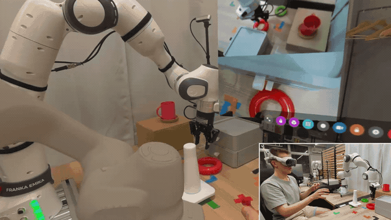

This project extends VisionProTeleop with ROS 2 pipelines that map Apple Vision Pro hand tracking to collaborative robots (Franka Research 3 (FR3) and MyCobot 280) and returns camera, point-cloud, audio, digital-twin and pose command feedback to the operator.

01
Motivation
Good teleoperation demands continuous perceptual feedback and an easy interface. This project presents a teleoperation architecture for cobots using the Apple Vision Pro. Demonstrated on both the low-cost MyCobot 280 and the high-performance FR3, the system integrates hand tracking with video pass-through and operator feedback to establish real-time telepresence. A synchronized 3D virtual representation of each robot is displayed within the spatial environment as a digital twin for state monitoring and visualization. The modular ROS 2 pipeline shows how the same Vision Pro interface can scale from an accessible desktop cobot to a research-grade manipulator.
02
Main Features
Commanded pose and virtual robot in 3D
Custom MuJoCo models of the MyCobot 280 and FR3 are streamed to Vision Pro with commanded and actual end-effector poses, improving teleoperation and enabling robot-state visualization when the physical robot is out of sight.
Clutch, gripper, and tracking protection
Left-hand pinch toggles motion, while right-hand pinch controls the gripper. End-effector pose is controlled by the right wrist frame, offset to align between the fingers. The Franka path also rejects stale tracking and pose jumps, filters commands, and clamps targets to a configured workspace.
Sensor data inside Vision Pro
Robot and RealSense cameras, downsampled RGB point cloud, audio, and synchronized digital twins return spatial context to the operator.
Teleoperation-focused interface
World locking for the camera and control bar, direct reset and exit actions, independent robot and point-cloud visibility, and a faster path into the tracking view.
03
Control Pipeline
1
Track
Vision Pro captures the operator's head, wrist, and finger poses.
2
Align
On activation, the human wrist is aligned with the robot end-effector frame for relative, intuitive control.
3
Map
ROS 2 converts wrist motion through MyCobot inverse kinematics or a direct Cartesian target for FR3.
4
Execute
The robot-specific controller sends arm, gripper, and status commands to the physical cobot.
5
Feedback
Sensor and robot-state data are streamed back to Vision Pro for operator awareness.
04
Operator Feedback
Teleoperation is bidirectional for both robots: the headset sends motion intent and receives spatial context from the robot workspace.
◉
Video
Robot-mounted and external RealSense camera streams.
◉
Point cloud
Downsampled RGB pointcloud placed in the corresponding simulation frame.
◉
Virtual Robot
MuJoCo state rendered as a spatial reference in Vision Pro.
◉
Audio
Enable sound, disable sound, and motor-state feedback.
High-performance cobot
Franka Research 3
Vision Pro wrist motion drives the FR3 through direct Cartesian impedance control, while hand gestures provide an explicit safety clutch and control of the Robotiq 2F-85 gripper.
FR3 teleoperation system architecture (Select the diagram for full-resolution)
02
Franka Research 3 Demonstrations
Play a short highlight video directly on this page or watch the full FR3 teleoperation demonstration on YouTube.
Short Vision Pro and FR3 teleoperation video.▶Full Vision Pro and FR3 teleoperation demonstration on YouTube.
Accessible low-cost cobot
MyCobot 280
The compact MyCobot 280 provides a lower-cost platform for the same Vision Pro teleoperation concept, using inverse kinematics and a serial hardware interface to command the arm and adaptive gripper.
MyCobot teleoperation system architecture (Select the diagram for full-resolution)
02
MyCobot Demonstrations
Full teleoperation demonstration
ROS 2 transforms and tracking markers visualized in RViz.
05
Current Limitations
After implementing C++ inverse kinematics and asynchronous command processing, physical command updates remain capped at ~12 Hz due to hardware communication limits in the MyCobot Python API and its internal ESP32.
The Franka colored wrist-camera point cloud is currently streamed at approximately 8 Hz, so it updates much more slowly than the robot controller and can lag during fast motion.
Camera and point-cloud quality must be balanced against local-network bandwidth and latency. WebRTC feedback can temporarily freeze while the separate control path remains active, so the AR view is not a safety system.
06
Acknowledgements
This project is built on VisionProTeleop by Younghyo Park and Pulkit Agrawal at Improbable AI. This page describes the ROS 2, FR3, MyCobot 280, RealSense, Robotiq, and Tracking Streamer extensions developed by Ferdinand Hartmann; it does not claim authorship of the original VisionProTeleop ecosystem.
The Franka controller integration, supporting launch configuration, and robot model used for this project were developed by Ferdinand Hartmann and are maintained in a private Repository of Murata Lab, Keio University.